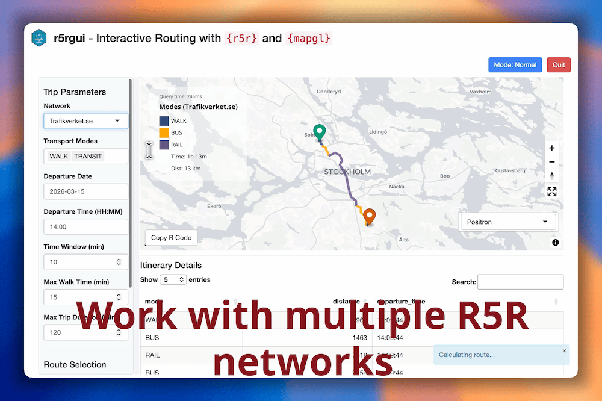
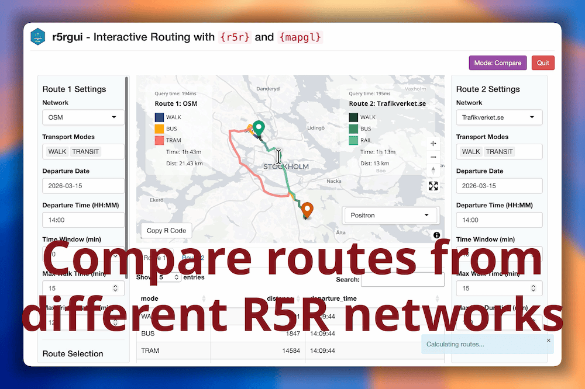
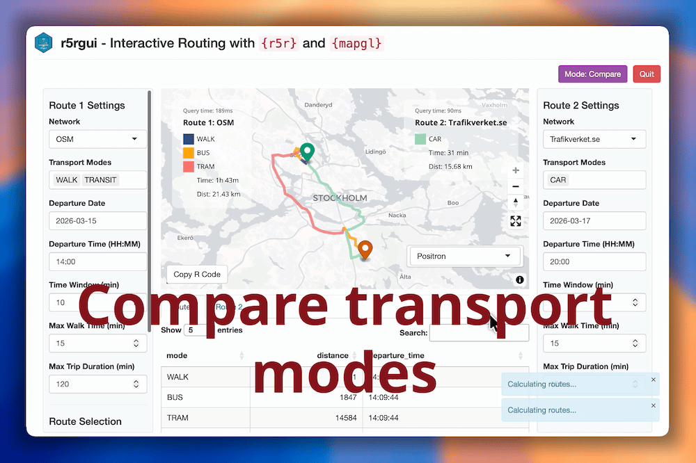

The goal of r5rgui is to allow the user to interactively explore routes calcualted with {r5r} package in a Shiny app, e.g. for troubleshooting routing problems.
Installation
Get it from CRAN:
install.packages("r5rgui")Or get the latest development version from R-Universe:
install.packages(
"r5rgui",
repos = c("https://e-kotov.r-universe.dev", "https://cloud.r-project.org")
)You can also install the development version of r5rgui from GitHub with:
# install.packages("pak")
pak::pak("e-kotov/r5rgui")Also setup Java as as you would for r5r package:
# install.packages('rJavaEnv') # if not installed yet
# install and use Java 21 in current session
rJavaEnv::use_java(21)Example
This is a basic example which shows you how to solve a common problem:

Work with multiple R5R networks

Compare routes from different R5R networks

Explore transport modes
What the demo runs internally is this simple example code:
library(r5r)
data_path <- system.file("extdata/poa", package = "r5r")
r5r_network <- build_network(data_path = data_path, verbose = FALSE)
r5r_gui(r5r_network, center = c(-51.22, -30.05), zoom = 11)Therefore you can replace data_path with your own data path and explore your own routing network.